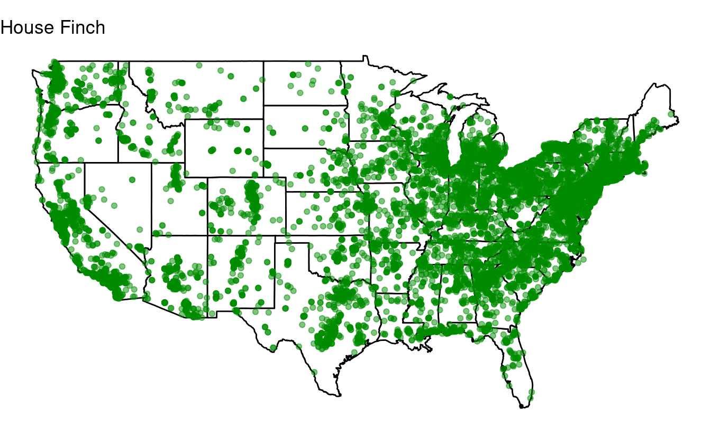
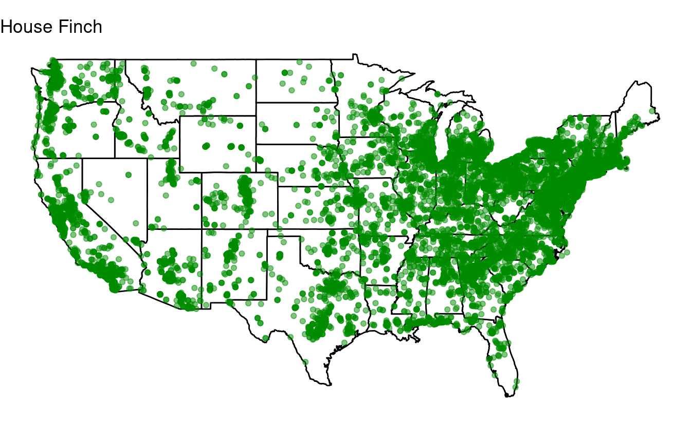

Session 12: Vectorization and loops in R
Need for repeat.
 Artwork by @allison_horst
Artwork by @allison_horst
Setup
New to Code Club?
-
If you didn’t already do this, please follow the Code Club Computer Setup instructions, which also have pointers for if you’re new to R or RStudio.
-
If you’re able to do so, please open RStudio a bit before Code Club starts – and in case you run into issues, please join the Zoom call early and we’ll help you troubleshoot.
Session goals
Today, you will learn:
- That you should avoid copying your code.
- What different strategies for iteration exist in R.
- What vectorization is and how to make use of it.
- How to write a
forloop. - Best practices when using
forloops. - When you should (not) use
forloops. - Bonus:
ifstatements.
Introduction
Don’t Repeat Yourself
Sometimes, you have a block of code and you need to repeat the operations in that code almost exactly. For instance, you may want to rerun a statistical model with different parameter values, rerun an analysis for a different batch of samples, or extract the same information for many different genes.
Your first instinct may be to copy-and-paste the block of code, and make the necessary slight adjustments in the pasted block. However, iterating and writing your own functions are strategies that are clearer, less error-prone, and more flexible (and these two can also be combined). When the number of repeats are high, iteration is needed. When the code that needs to be repeated is more than a line or two, writing your own functions becomes useful.
Iteration
Loops are the most universal iteration tool and the one we will focus on today. However, R has “functional programming” iteration methods that are less verbose and that can also be quicker to execute. These are the apply family of functions, and a more recent tidyverse approach implemented in the purrr package: we will learn more about those in the two upcoming Code Club sessions.
Loops are still a very good place to start using iteration because they they make the iteration explicit and are therefore more intuitive. Moreover, they can easily accommodate longer blocks of code without the need to also write your own function.
We will talk about the most common type of loop: the for loops. (Other types of loops in R are while loops and repeat loops.)
But first…
Before we talk about loops we should take a step back and explore vectorization. Besides functional programming methods, vectorization is the other reason that loops are not as widely used in R as in other programming languages.
I: Vectorization
Let’s say we have a vector (i.e., a collection of values) that consists of distances in miles:
distances_miles <- c(24, 81, 48, 29, 177, 175, 20, 11, 62, 156)
Of course, we can’t science with miles, so we’ll have to convert these distances to kilometers by multiplying each value in the vector by 1.61. You may or may not know that this can be done really easily in R:
distances_km <- distances_miles * 1.61
distances_km
#> [1] 38.64 130.41 77.28 46.69 284.97 281.75 32.20 17.71 99.82 251.16
What is happening here is called a vectorized operation: 1.61 is automatically recycled as many times as needed to be multiplied with each individual value in the distance_miles vector. This is a pretty unique and very useful feature of R!
In many other languages, we would need a loop or a similar construct to iterate over each value in the vector and multiply by 1.61. In fact, under the hood, R also uses a loop to do this! So does it even make a difference? Yes – the advantages of using vectorization in R are:
- You don’t have to write the loop, saving you a fair bit of typing and making the code clearer.
- The under-the-hood-loop is being executed much faster than a loop that you would write. This is because it is written in
C/C++code which only has to be called once rather than at least as many times as there are iterations in our loop.
Other vectorization patterns
Above, we saw an example of multiplying a vector by a single number. We can also use vectorized operations when both objects contain multiple items. For instance, say we have a vector with corresponding values for two dates:
distances_Mar4 <- c(17, 93, 56, 19, 175, 40, 69, 267, 4, 91)
distances_Mar5 <- c(87, 143, 103, 223, 106, 18, 87, 72, 59, 5)
To get the sum of these values at each position (index) of the two vectors (17 + 87, 93 + 143, etc.), we can simply do the following:
distances_Mar4 + distances_Mar5
#> [1] 104 236 159 242 281 58 156 339 63 96
This also works for columns of a dataframe – and let’s say we wanted the mean distance this time:
distance_df <- data.frame(distances_Mar4, distances_Mar5)
distance_df$distances_mean = (distance_df$distances_Mar4 + distance_df$distances_Mar5) / 2
head(distance_df)
#> distances_Mar4 distances_Mar5 distances_mean
#> 1 17 87 52.0
#> 2 93 143 118.0
#> 3 56 103 79.5
#> 4 19 223 121.0
#> 5 175 106 140.5
#> 6 40 18 29.0
Vectorization with matrices
Furthermore, we can also perform vectorized operations on entire matrices. With the following matrix:
# We use the "sample" function to get 50 random values between 1 and a 100:
mat <- matrix(sample(1:100, 50), nrow = 5, ncol = 5)
mat
#> [,1] [,2] [,3] [,4] [,5]
#> [1,] 43 88 60 31 1
#> [2,] 25 47 9 89 82
#> [3,] 86 99 78 63 73
#> [4,] 33 72 85 41 49
#> [5,] 44 16 87 64 90
…we could multiple all values by 10 or get the square of each value simply as follows:
mat_more <- mat * 10
mat_more
#> [,1] [,2] [,3] [,4] [,5]
#> [1,] 430 880 600 310 10
#> [2,] 250 470 90 890 820
#> [3,] 860 990 780 630 730
#> [4,] 330 720 850 410 490
#> [5,] 440 160 870 640 900
mat_squared <- mat * mat
mat_squared
#> [,1] [,2] [,3] [,4] [,5]
#> [1,] 1849 7744 3600 961 1
#> [2,] 625 2209 81 7921 6724
#> [3,] 7396 9801 6084 3969 5329
#> [4,] 1089 5184 7225 1681 2401
#> [5,] 1936 256 7569 4096 8100
Vectorization with indices
We can also use vectorized solutions when we want to operate only on elements that satisfy a certain condition.
Let’s say we consider any distance in one of our vectors that is below 50 to be insufficient, and we want to turn those values into negatives.
To do so, we make use of R’s ability to index a vector with a logical vector:
# "not_far_enough" will be a vector of logicals:
not_far_enough <- distances_Mar4 < 50
not_far_enough
#> [1] TRUE FALSE FALSE TRUE FALSE TRUE FALSE FALSE TRUE FALSE
# When we the original vector with logical vector,
# we get only those values for which "not_far_enough" is TRUE:
distances_Mar4[not_far_enough]
#> [1] 17 19 40 4
With the following syntax, we can replace just those low distances in our original vector:
distances_Mar4[not_far_enough] <- distances_Mar4[not_far_enough] * -1
distances_Mar4
#> [1] -17 93 56 -19 175 -40 69 267 -4 91
II: For loops
While it is important to use vectorization whenever possible, it can only be applied to a specific set of problems. A more universal solution when you need to repeat operations is the for loop. for loops iterate over a collection of values, allowing you to perform one or more actions for each value in the collection.
The basic syntax is as follows:
for (variable_name in collection_name) {
#...do things with variable_name...
}
On the first line, you initialize the for loop, telling it to assign each value in the collection to a variable (here, variable_name) one at a time.
The variable name is arbitrary, and the collection is whatever you want to loop over. However, for, the parentheses (), in, and the curly braces {} are all fixed elements of for loops. A simple example will help to understand the synax:
# A loop to print negated values:
for (one_number in c(1, 2, 3, 4)) {
print(one_number * -1)
}
#> [1] -1
#> [1] -2
#> [1] -3
#> [1] -4
Note that we don’t have to use the variable that we are looping over: we could also use a for loop as a roundabout way to simply repeat something as many times as there are values in our collection:
for (dummy in c(1, 2, 3, 4)) {
print("Yes!")
}
#> [1] "Yes!"
#> [1] "Yes!"
#> [1] "Yes!"
#> [1] "Yes!"
As mentioned, the variable name that we assign is arbitrary: we could use anything, as long as we reference it with the same name inside the loop:
# Example 1 with a different variable name: "positive_number"
for (positive_number in c(1, 2, 3, 4)) {
print(positive_number * -1)
}
#> [1] -1
#> [1] -2
#> [1] -3
#> [1] -4
# Example 2 with a different variable name: "i"
for (i in c(1, 2, 3, 4)) {
print(i * -1)
}
#> [1] -1
#> [1] -2
#> [1] -3
#> [1] -4
Note that the variable as it was last assigned in the loop does persist in your environment:
i
#> [1] 4
The curly braces are not strictly necessary for one-liners like this:
for (i in 1:4) print(i * -1)
#> [1] -1
#> [1] -2
#> [1] -3
#> [1] -4
for loop output
Note that we need the
print() function to print anything to screen – nothing will be printed if we omit this:
for (i in 1:4) {
i * -1
}
Similarly, if we want the output to be saved in an object of some kind, we need to explicitly make an assignment in each iteration of the loop. This is where we need to start paying attention to the design of our loop. Unless computational speed is of no concern at all, you should avoid growing an object in each iteration of the loop.
For example, you might be inclined to do the following if you wanted to compute the median of each column in a data frame:
column_medians <- vector()
for (column_number in 1:ncol(distance_df)) {
column_median <- median(distance_df[[column_number]])
column_medians <- c(column_medians, column_median)
}
column_medians
#> [1] 62.50 87.00 78.75
Similarly, you may be adding a column (with
cbind()) or a row (with
rbind()) to a dataframe in each iteration of the loop. However, the problem with these approaches is that R has to create an entirely new object in each iteration of the loop, because the object’s memory requirements keep increasing.
Instead, you’ll want to give the final vector (here, column_medians) the appropriate size before you start the loop:
column_medians <- vector(length = ncol(distance_df))
for (column_number in 1:ncol(distance_df)) {
column_median <- median(distance_df[[column_number]])
column_medians[column_number] <- column_median
}
Note that for very small problems, such as the example above, there will not be a noticeable difference in computation time between pre-assigning a properly sized object versus growing an object inside the loop. However, it is still good to get into the habit of pre-assigning an object of the right size.
Summary guidelines
- Don’t use a loop when you can instead use vectorized operations.
- Don’t grow objects inside the loop. Instead, pre-assign an object large enough to contain all output of the loop and fill it in inside the loop.
- When you write a loop, avoid doing things inside the loop that don’t need to be repeated.
Learning about how to create your own functions and/or to use functional programming techniques like purrr and the apply family of functions (upcoming Code Club sessions!) will likely reduce your reliance on loops. For instance, as we’ll see next week, computing the median of each column in a dataframe can be done much more succinctly with
apply().
Even for more experienced users, loops remain a more viable option when longer blocks of code need to be repeated: we will practice with that in the exercises.
Breakout rooms!
For the exercises, you can download an R Markdown file with some code to get set up (I recommend coding in that document to get a nice overview of the plots that you produce):
dir.create('S12')
todays_rmd <- 'https://raw.githubusercontent.com/biodash/biodash.github.io/master/content/codeclub/12_loops/exercises.Rmd'
download.file(url = todays_rmd, destfile = 'S12/exercises.Rmd')
The following code is already in your R Markdown file, which will download and read the bird dataset and the necessary packages:
## Download the file with bird data:
birds_url <- 'https://raw.githubusercontent.com/biodash/biodash.github.io/master/assets/data/birds/backyard-birds_sample_error.tsv'
birds_file <- 'backyard-birds_sample_error.tsv'
download.file(url = birds_url, destfile = birds_file)
## Read the file with bird data:
birds <- read_tsv(birds_file)
## Load the maps package and get the state map:
# install.packages('maps') # first install if necessary
library(maps)
states <- map_data("state")
## Load the tidyverse:
library(tidyverse)
Last week, we learned about making maps. If you attended one of the first few Code Club sessions, you’ll recall our Great Backyard Birdcount dataset. Here, we’ll use a country-wide random subset of this data (the full file is over 4 GB) to see where Carolina Chickadees were seen:
## With this line, we select only the rows where the column "species_en"
## (English species name) equals "Carolina Chickadee",
## i.e. we are getting just the records for the Carolina Chickadee:
caro_chickadee <- birds[birds$species_en == 'Carolina Chickadee', ]
# Next, we create a map much like we did last week:
ggplot(data = states,
mapping = aes(x = long, y = lat, group = group)) +
geom_polygon(color = "black", fill = "white") +
geom_point(data = caro_chickadee,
aes(x = long, y = lat, group = NULL),
color = "green4", alpha = 0.5) +
coord_fixed(1.3) +
labs(title = 'Carolina Chickadee')

Uh-oh! Something appears to have gone wrong. In the first exercise, you’ll use vectorization to fix the coordinates.
In the second exercise, you’ll use a loop to quickly produce similar plots for several other species.
Exercise 1: Vectorization
Try to fix the coordinates using vectorized operations, and recreate the map to see if it worked.
- Start with the latitude, which is wrong for all points.
Hints (click here)
-
You can modify the
caro_chickadeedataframe and keep the plotting code exactly the same. -
Prepending the latitude column with a
-will negate the values. -
A base R solution to refer to (and replace) the column with latitudes is
caro_chickadee$lat.
Solution (click here)
First we fix the latitude, which was simply negated:
caro_chickadee$lat <- -caro_chickadee$lat
# Or a tidyverse way of doing this:
# caro_chickadee %>% mutate(lat = -lat)
Create the first map with the same code as the example:
ggplot(data = states,
mapping = aes(x = long, y = lat, group = group)) +
geom_polygon(color = "black", fill = "white") +
geom_point(data = caro_chickadee,
aes(x = long, y = lat, group = NULL),
color = "green4", alpha = 0.5) +
coord_fixed(1.3) +
labs(title = 'Carolina Chickadee')

- Once you have fixed the latitude, you should notice that for one state, there is a problem with the longitude (the offset is 10 decimal degrees).
Hints (click here)
-
The states are in the
stateProvincecolumn, and North Carolina’s name is simply “North Carolina” in that column. -
It may help to first create a logical vector indicating whether the state for each row equals “North Carolina”.
-
Your final map will look nicer if you get rid of the plotting canvas by adding `+ theme_void()` to the code for the plot.
Solution (click here)
It looks like North Caroline is submerged in the Atlantic. Let’s perform a rescue operation by fixing the longitudes just for North Carolina:
NC_rows <- caro_chickadee$stateProvince == "North Carolina"
caro_chickadee$long[NC_rows] <- caro_chickadee$long[NC_rows] - 10
And we create the final map:
ggplot(data = states,
mapping = aes(x = long, y = lat, group = group)) +
geom_polygon(color = "black", fill = "white") +
geom_point(data = caro_chickadee,
aes(x = long, y = lat, group = NULL),
color = "green4", alpha = 0.5) +
coord_fixed(1.3) +
labs(title = 'Carolina Chickadee') +
theme_void()

Nice!
Exercise 2: for loops
Find the 10 most commonly observed bird species in the dataset, and save their English names (found in the species_en column) in a vector.
Feel free to check out the solution if you’re not sure how, because the focus here is on the next step: trying to create a loop.
Solution (click here)
top10 <- birds %>%
count(species_en, sort = TRUE) %>% # Produces a sorted count table for "species_en"
pull(species_en) %>% # Extracts the "species_en" column
head(n = 10) # Take the top 10
Next, loop over all the top-10 species to produce a plot for each one of them. Start with the code for the Carolina Chickadee, including the subsetting operation, and modify that.
Hints (click here)
-
In the subsetting operation where you select the focal species, replace “Carolina Chickadee” with whatever you name the variable (indicating an individual species) that you loop over.
Because this is a variable name, and not a string like “Carolina Chickadee”, don’t forget to omit the quotes.
-
You’ll also need to change the title with the looping variable.
Solution (click here)
for (one_species in top10) {
# Select just the data for one species:
one_bird_data <- birds[birds$species_en == one_species, ]
p <- ggplot(data = states,
mapping = aes(x = long, y = lat, group = group)) +
geom_polygon(color = "black", fill = "white") +
geom_point(data = one_bird_data, color = "green4", alpha = 0.5,
aes(x = long, y = lat, group = NULL)) +
coord_fixed(1.3) +
labs(title = one_species) + # Make sure to change this to the looping variable
theme_void()
print(p)
}


 



Bonus exercise: if statements
if statements are similar in syntax to for loops, and are also considered a “flow control” structure. But their purpose is different from loops: instead of iterating, they do something once and they only do it when a condition is fulfilled.
For instance, we may want to check in a script whether a certain directory (folder) exists on our computer, and if it doesn’t, then we create the directory:
if (dir.exists('path/to/my/dir')) {
warning("Oh my, the output directory doesn't exist yet!")
dir.create('path/to/my/dir')
}
Inside the parentheses () after if should be a statement that evaluates to either TRUE or FALSE (
dir.exists() will be TRUE if the directory exists, and FALSE if it does not). If it is TRUE, whatever is inside the curly braces {} will be executed, and if it is FALSE, what is inside the curly braces will be ignored.
if statements are commonly combined with for loops: we may want to only execute the functions in our loop for items in our collection that fulfill a certain condition:
for (one_number in 1:10) {
if(one_number > 7) {
print(one_number)
}
}
#> [1] 8
#> [1] 9
#> [1] 10
In the example above, one number > 7 will only be TRUE for numbers larger than 7. This example is quite contrived, as it would have been easier (and faster!) to remove these items from the vector before the loop, but it hopefully gets the point across.
Many of the maps we produced in the previous exercise looked quite similar, with most species very widespread and a few restricted to the east of the US. Maybe if we select species that haven’t been seen in Ohio, we can find some other distributional patterns.
First, select the the top 50 most observed bird species, just like you did in exercise 2.
Then, use an if statement to create plots only for those top-50 birds that have not been seen in Ohio.
Solution (click here)
- Select the top-50 birds:
all_species <- birds %>%
count(species_en, sort = TRUE) %>%
head(n = 50) %>%
pull(species_en)
- Loop over the species:
for (one_species in all_species) {
# Select the focal species:
one_bird <- birds[birds$species_en == one_species, ]
# Create a dataframe with only records from Ohio:
one_bird_ohio <- one_bird[one_bird$stateProvince == 'Ohio', ]
# Test whether the dataframe with only records from Ohio has any rows.
# If it does not, we create the map for the species in question:
if(nrow(one_bird_ohio) == 0) {
p <- ggplot(data = states,
mapping = aes(x = long, y = lat, group = group)) +
geom_polygon(color = "black", fill = "white") +
geom_point(data = one_bird, color = "green4", alpha = 0.5,
aes(x = long, y = lat, group = NULL)) +
coord_fixed(1.3) +
labs(title = one_species) +
theme_void()
print(p)
}
}


Going further
seq_along()
To loop over column indices, we have used 1:ncol() above, and to loop over vector indices, you could similarly use 1:length().
However, an alternative is
seq_along(), which will create an index for you.
The advantage of
seq_along() is thtat it will behave better when your vector accidentally has length 0.
Further reading
- Vectorization in R: Why? (Noam Ross, 2014)
- The Iteration chapter in Hadley Wickham’s R for Data Science (2017)